My venture / Since September 2023
RELEC
Owner & CEO
I lead RELEC and develop the visual identity and digital experiences connecting RELEC Media, Shop RELEC and RELEC Group. The venture took a more formal shape in September 2025.
Explore the websitesThe person behind the work

Hello, I’m Mukhtar
I’m Muhammad Mukhtar Zikirullahi, a multidisciplinary creative technologist with a BSc in Information Technology and an advanced diploma in multimedia.
My work spans web development, brand identity, photography, digital media and immersive design. I enjoy bringing technical structure and visual thinking to the same problem.
I’m the owner and CEO of RELEC, Information Technology Officer at CHRICED, and Digital Media Officer at CHRICED Radio & TV. I also contribute technical work and support to IdeaPlus Foundation. Each setting gives my creative practice a different purpose: building a business, supporting civic communication or helping an organisation work more effectively.
My Nigerian heritage informs my creative lens, and my curiosity keeps me exploring new tools, perspectives and ways to tell a story.
Tell me about your ideaThe people and places behind the practice
My own venture, ongoing organisational roles and technical contributions. Different responsibilities, connected by the same care for how things work.
My venture / Since September 2023
Owner & CEO
I lead RELEC and develop the visual identity and digital experiences connecting RELEC Media, Shop RELEC and RELEC Group. The venture took a more formal shape in September 2025.
Explore the websitesOngoing organisational role
Information Technology Officer
June 2023 — presentI support the technology behind CHRICED’s civic work, bringing practical IT support and digital problem-solving to the organisation’s operations.
Explore my contributionOngoing organisational role
Digital Media Officer
May 2025 — presentVideo editing, production collaboration and digital storytelling help civic conversations reach people through broadcast and digital media.
Explore the media work
Technical contribution / Since August 2026
Technical work & support
I contribute development and technical support to the Foundation’s digital work, bringing practical problem-solving and attention to the people using its website.
Visit the FoundationMy journey / 2020 — now
Each new medium added a different way of thinking. Follow the thread.
Photography, logo design and 3D modelling begin to overlap. A curiosity about images becomes a wider interest in how things are made.
Explore photographyFrontend training and collaborative HTML work introduce another way to turn an idea into something people can use.
See the early web projectArchitectural modelling brings space, material and light into the work, including the Aptech institution visualisation.
Enter the 3D studioA BSc in Information Technology at Middlesex University Dubai, awarded First Class Honours, brings together technical study and a final-year VR research project.
Enter the VR projectI join CHRICED as Information Technology Officer, supporting the technology behind the organisation’s work. This role continues today.
Explore my CHRICED workI begin building RELEC, my own venture. It becomes a space to bring business, identity, culture and digital experiences together.
Explore the RELEC identityPersonal projects connect web design, 3D modelling and experimental immersive work. The disciplines begin to inform one another.
Explore the 3D workAlongside my IT role, I become Digital Media Officer at CHRICED Radio & TV, contributing video editing, production collaboration and digital storytelling. Both roles are ongoing.
See the civic media workRELEC moves from its early beginnings into a more formal venture, with me as owner and CEO. Its identity and digital experiences continue to develop across RELEC Media, Shop RELEC and RELEC Group.
Explore the RELEC websitesI begin contributing technical work and support to IdeaPlus Foundation, bringing my development and digital problem-solving experience into another organisational setting.
Meet the organisationsA growing body of websites, identity work and digital media brings these experiences together. The journey continues across design, development and storytelling.
Explore the recent websitesHave something in mind?
Tell me what you’re building, who it’s for and where you need a creative hand.
Start a conversation